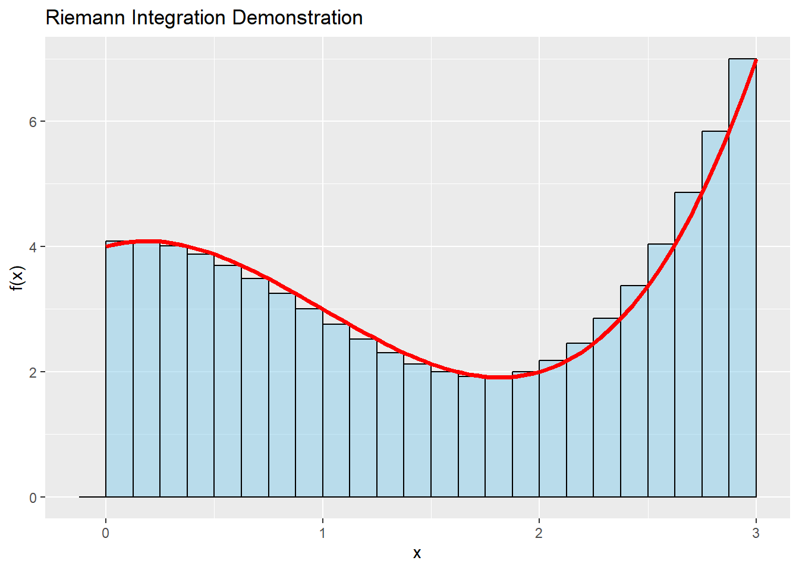
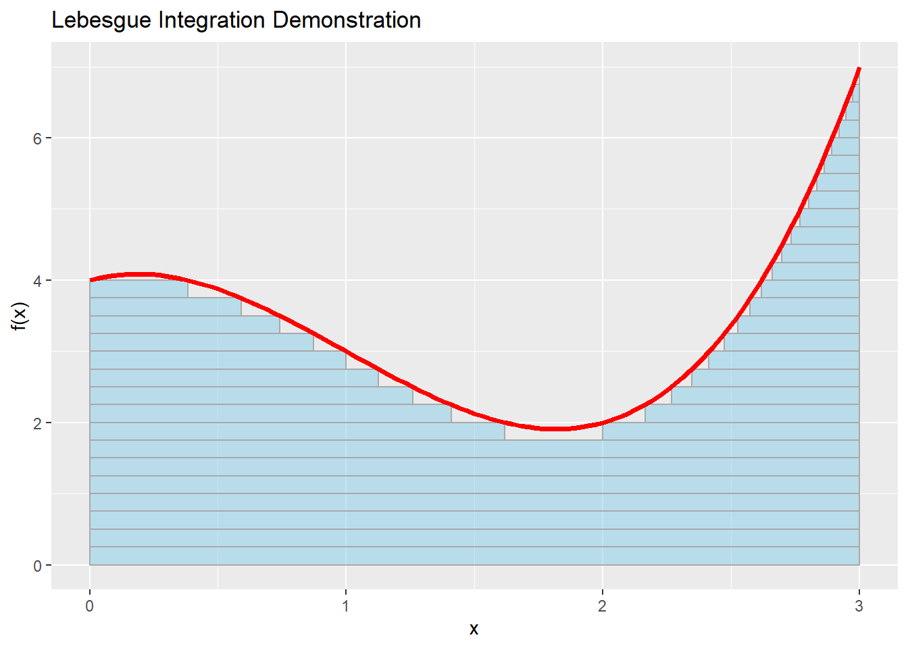

After calculus of variations, we need to divert further to a topic somewhat related to integration. It will be really hard to follow some pieces otherwise.
A primer on measure theory
You may have grown accustomed to call “integration” to something like \(\int_{a}^{b}fdx\) , but that’s actually just the Riemann integration. Ok, it “just” powers 99% of all real-life integration, but there are many other specialized integrals that can handle special situations like discontinuities or holes in \(f\) , such as the Riemann-Stieltjes integral, the Henstock-Kurzweil integral, and the Lebesgue integral. The last one is where we will concentrate the most.
We start with a seemingly unrelated problem: the size of a set. Let’s say we have a set of \(\mathbb{N}\) and we want to know how big it is: we may, for example, just count how many elements are there in the set:
In a sense, \(\#\) is a function that receives a set with a combination of elements from \(\mathbb{N}\) and outputs a numeric value. In the literature, the elements belong to a set \(\Omega\) and the combinations of those elements comes from a set of sets \(\Sigma\) , also called a sigma-algebra. More formally, \(\# : \Sigma \to \mathbb{N}\).
\(\#\) is called a measure. Measures are normally referred as \(\mu\), and fulfill roughly two conditions:
\(\mu(s) \ge 0 ,\, \forall s \in \Sigma\), that is, they are always positive. This condition can be relaxed, though, into having “signed measures”.
If \(A_1 \cap A_2 = \{\} \implies {\mu (A_1 \cup A_2) = \mu(A_1) + \mu(A_2)}\) . This means that the “size” of a set is the same as the sum of the sizes of its subsets.
There are many measures, with different properties, that are defined to operate over “measurable sets”, namely the pair \((\Omega,\Sigma)\). For example, the Borel measure, which we will use interchangeably with the Lebesgue measure1:
\[
\lambda((a,b])=b-a
\]
If the set is a composition of intervals, it can be split into as many sums as we need, so:
We will now do something daring: notice that definite integrals work over an interval (a set) and the result is a number. Yes, an integral is a (signed) measure2. This will require a bit of rethinking of what integrating really means, as well as changing our notation for the integral.
In the world we all know, we do Riemann integration, \(\int_{a}^{b}fdx\). This means:
\(I=\left[a,b\right]\) will select the portion of the function’s domain, \(\Omega\) , to integrate. With the language we have used above, \(I\subset \Omega,\, I\in \Sigma\)
We split \(I\) into partitions, typically using a single partition size \(\Delta x\), and come up with a list of values \(\left\{x_0=a, x_1, …, x_n=b\right\} \in I\)
For each partition \(x_i\) we evaluate it with \(f(x_i)\) to obtain a list of evaluations \(f_0, f_1, ..., f_n\)
We calculate an approximation of the integral by making each of these values a rectangle of height \(f_i\) and predefined width \(\Delta x\), and summing over all rectangles.
The integral, if it exists, is the limit of this sum when the partition’s norm tends to zero.
Here’s how it looks like:
Code
library(ggplot2)library(broom)
Warning: package 'broom' was built under R version 4.3.2
Code
f <-function(x) x^3-3*x^2+ x +4# Define the interval [a, b] for integrationa <-0b <-3# Number of rectangles for approximationn <-24# Generate x values and corresponding function valuesx_values <-seq(a, b, length.out = n+1)y_values <-f(x_values)# Create a data frame for ggplotdf <-data.frame(x = x_values, y = y_values)# Calculate rectangle heightsdf$rect_heights <-c(0,f(x_values)[2:length(x_values)])# Calculate total width of the bars to fill the x-axistotal_width <- b - a# Create a ggplot with rectanglesp <-ggplot(df, aes(x = x, y = rect_heights)) +geom_col(width=(total_width/n), fill ="skyblue", color ="black", just =1, alpha=0.5) +geom_function(fun = f, color ="red", linewidth =1.25) +labs(title ="Riemann Integration Demonstration",x ="x", y ="f(x)")# Print the plotprint(p)

Powerful as it is, this can be improved. For starters, we can only integrate intervals over a real domain, \(\Omega =\mathbb{R}\) . For functions with many variables, we also need to integrate over many real domains, for example \(\int_{x_a}^{x_b}\int_{y_a}^{y_b}\int_{z_a}^{z_b}f(x,y,z)\,dz\,dy\,dx\) .
Notice that we could get rid of these restrictions if we integrate over the only real line that’s guaranteed to exist: the one of the codomain or image. Kind of like a stack of dishes, for each height we measure the domain that falls under it. This is called Lebesgue integration, it’s written as \(\int_{s} f\, d\lambda\) , and it means:
\(s\) will select a portion of the function’s domain, \(\Omega\) , to integrate. With the language we have used above, \(s\subset \Omega,\, s\in \Sigma\)
We split the image of the function, \(f^{-1}\) into partitions, and we obtain the images \(f_0,f_1,…,\infty\)
For each of these partitions, we obtain the set of values of the domain that have a function value at least that height: \(f^{-1}_t = \{\omega \in s\, / \, f(\omega) > t\}\in\Sigma\). Notice that these sets should be measurable and that \(f_{\infty} = \{\}\), so that the integral is bounded.
We calculate an approximation of the integral by making each of these sets a group of “volumes” of predefined height \(f_t\) and base \(\mu(f^{-1}_t)\), and summing over all rectangles.
Adding up all the measured sets, all the slices of heights, will yield a final value, which behaves as a measure
The integral, if it exists, is the supremum of all the sum calculations that can be achieved by splitting the image into smaller and smaller partitions
Here’s how this mess looks like:
Code
A <-1B <--3C <-1D <-4f <-function(x) A*x^3+ B*x^2+ C*x + Ddfdx <-function(x) A*3*x^2+ B*2*x + C# Define the domain [left, right] for integrationleft <-0right <-3# Number of image partitionsmax_y <-7n <-28delta_y <- max_y / n# Generate x values and corresponding function valuesy_values <-seq(0, max_y, length.out = n +1)find_real_roots_of_cubic <-function(A, B, C, D, tolerance =1e-10) {# Find the roots using polyroot() roots <-polyroot(c(D, C, B, A))# Extract real parts of the roots real_parts <-Re(roots)# Filter out complex roots (where the imaginary part is close to zero) real_roots <- real_parts[abs(Im(roots)) < tolerance]return(real_roots)}calculate_intervals_for_measure <-function(A, B, C, D, lower_bound, upper_bound) {# Find the real roots roots <-find_real_roots_of_cubic(A, B, C, D) roots <-sort(roots)# The first interval should start on the lower bound if the function is decreasing intervals <-data.frame(a =double(), b =double()) current_left <- lower_bound# Then, build every pair of (f' > 0, f' < 0).for (i in (1:length(roots))) {# Stop if you have gone beyond the boundary.if (roots[i] > upper_bound) {break; }if (!is.na(current_left)) { possible_right <- roots[i]if (dfdx(possible_right) <0) {if (current_left < possible_right) {# Add an interval. intervals[nrow(intervals) +1,] <-c(current_left, possible_right) current_left <-NA } else {# This is closing an interval to the left of the lower bound. Skip. } } else {# Another increasing left would be the start of an interval to the left of the lower bound# or to the right of the lower bound. So, just keep the maximum.# It could also be a missed root in between, but we will disregard this option. current_left <-max(current_left, possible_right) } } else { possible_left <- roots[i]if (dfdx(possible_left) >0) {if (possible_left < upper_bound) {# The opening of a new interval. As long as it's not beyond the upper bound, use it. current_left <- possible_left } } else {# A decreasing function, without a left boundary, can be discarded } } }# If there's an open interval after processing, close it at the upper bound.if (!is.na(current_left)) { intervals[nrow(intervals) +1,] <-c(current_left, upper_bound) }return(intervals)}# Create a data frame for ggplotrectangles <-data.frame(xmin =double(),xmax =double(),ymin =double(),ymax =double())# Calculate all rectanglesfor(y in y_values) { intervals <-calculate_intervals_for_measure(A, B, C, D - y, left, right)for (i in (1:nrow(intervals))) { interval <- intervals[i,] rectangles[nrow(rectangles) +1,] <-c(interval[1], interval[2], max(0, y - delta_y), y) }}# Create a ggplot with rectanglesp <-ggplot() +geom_rect(data = rectangles,aes(xmin = xmin, xmax = xmax, ymin = ymin, ymax = ymax),fill ="skyblue",colour ="darkgrey",alpha =0.5) +geom_function(fun = f, color ="red", linewidth =1.25) +labs(title ="Lebesgue Integration Demonstration",x ="x", y ="f(x)")# Print the plotprint(p)

Gaussian measures
As a final example of a measure, the n-dimensional Gaussian measure, with mean 0 and standard deviation 1, is defined as:
Again, for every possible value of \(x \in A\), we will measure all the image sets that result from those values and we add up all those measure results. This particular function is really great because for \(x\rightarrow\pm \infty\), the measure is still a number. It’s also called a probability measure because \(\gamma^n(\Omega)=1\), that is, the total measured area under the whole domain is 1 or 100%. If you have done a bit of probability, the function \(\mathbb{P}\) was a probability measure all along.
This is a lot to digest, I know. Just read it until it clicks. It took me 3 years of meditating on the subject after all!
The Lebesgue outer measure has a more complex definition that avoids some pathological results that the Borel measure has in certain sets. In “reasonable” sets where the Borel measure is defined, the Lebesgue measure coincides.↩︎
The converse, that any (signed) measure is always an integral, is also true under certain conditions. This is the consequence of the Radon-Nikodym theorem.↩︎